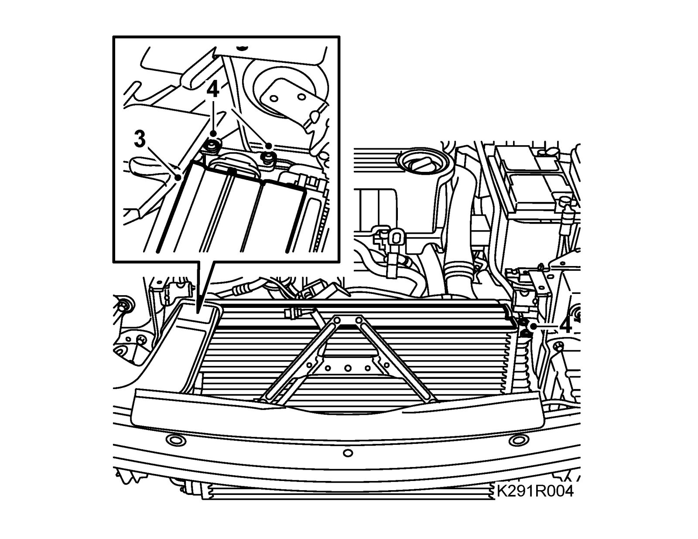
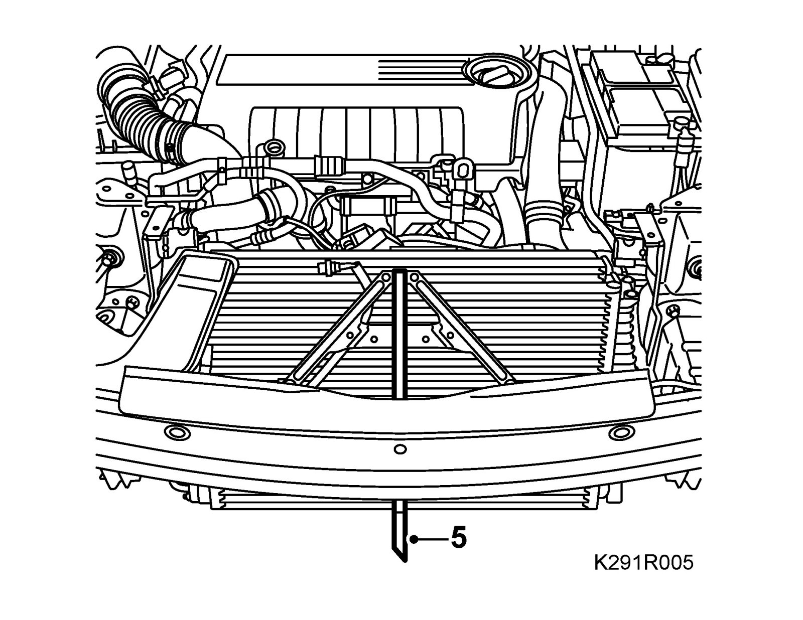
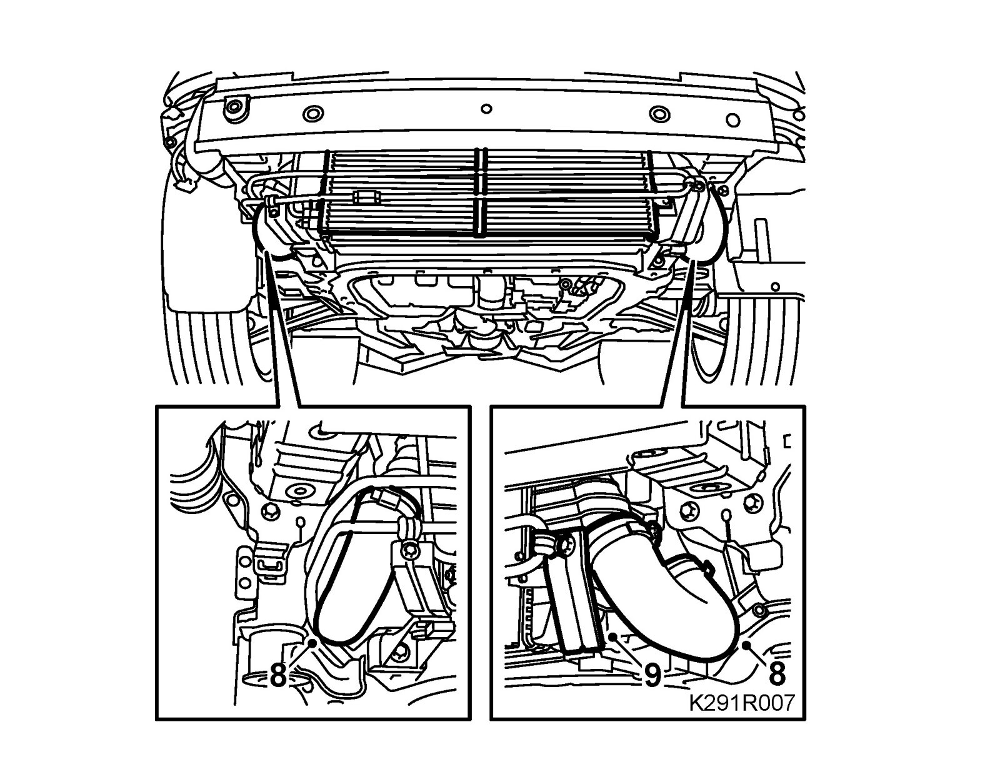
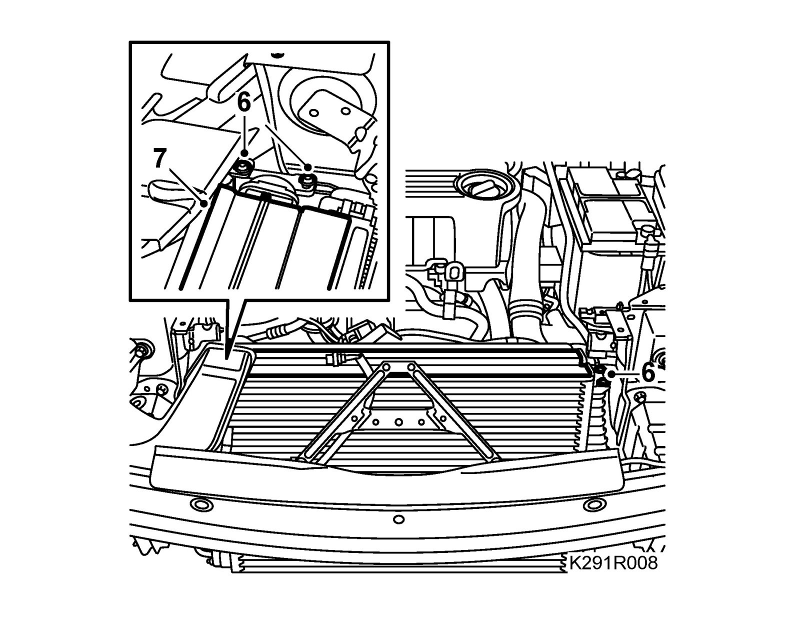
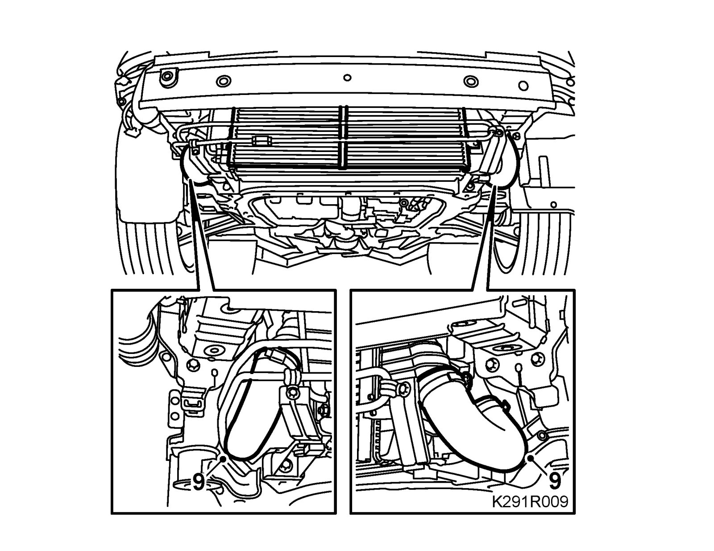
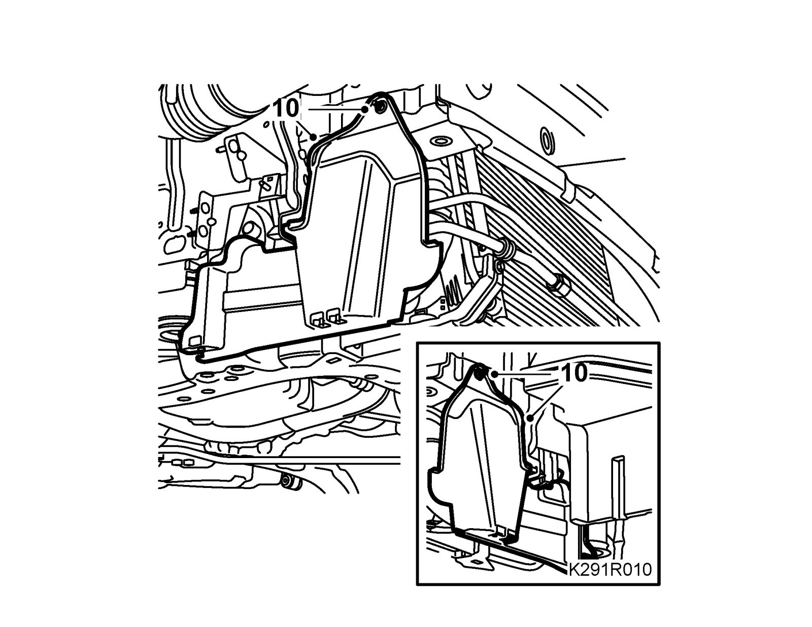

Intercooler: Service and Repair
Charge air coolerTo remove
1. Remove the Front bumper shell.
2. Remove the Upper radiator member.
3. Remove the upper radiator cover.

4. Remove the upper bolts of the charge air cooler.
5. Detach the condenser from the charge air cooler and suspend it with a 83 95 212 Strap.

6. Remove the side covers.
7. Raise the car.
8. Detach the hoses from the charge air cooler.

9. Remove the bracket for the power steering pipe on the left side.
10. Remove the charge air cooler by carefully pulling it downwards.
11. Remove the left stay of the power steering pipe.
To fit
1. Fit the charge air cooler.
2. Fit the left stay of the power steering pipe.
3. Lower the car.
4. Release the condenser from the cable tie.
5. Fit the condenser.

6. Fit the charge air cooler bolts.
7. Fit the upper radiator cover.
8. Raise the car.
9. Fit the hoses to the charge air cooler and tighten the hose clips.

10. Fit the side covers.

11. Lower the car.
12. Fit the Upper radiator member.
13. Fit the Front bumper shell.